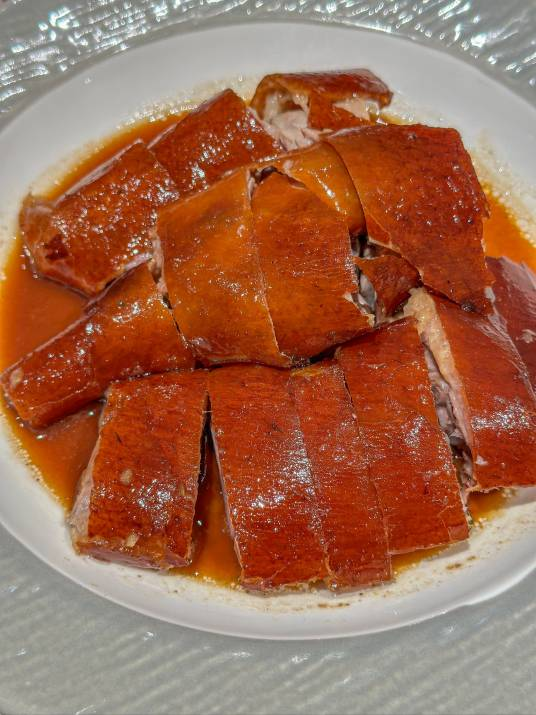

烧鹅
烧鹅是广东省一道著名的广府菜，属粤菜系，烧鹅源于烤鸭。
鹅以乌鬃鹅为优，去翼、脚、内脏的整鹅，吹气，涂五香料，缝肚，滚水烫皮，过冷水，糖水匀皮，晾风而后腌制，最后挂在烤炉里或明火上转动烤成，斩件上碟，便可进食。
广东地区著名的烧鹅如广州市黄埔区的“深井烧鹅”，江门市新会区古井镇的“古井烧鹅” ，深圳光明区的“公明烧鹅”，东莞大岭山的“荔枝柴烧鹅”，中山“三墩烧鹅”、佛山的“羊额烧鹅”等。
发展历史
南宋末年，文天祥、陈文龙等志士保护幼帝退居广东一带坚持抗元，南宋厨师也随之来到广东。作为宋朝的一道名菜，烤鸭自然也被带到了这里。
广东并无杭州一带盛产的砚鸭，于是厨师以广东本地的鹅代替，改良成独具广式特色的烧鹅。
烧鹅是粤菜中的一道传统名菜，它以整鹅去翅和头烤制而成。成菜腹含卤汁，滋味醇厚。
将烧烤好的鹅斩成小块，其皮、肉、骨连而不脱，入口即离，具有皮脆、肉嫩、骨香、肥而不腻的特点。若是佐以酸梅酱蘸食，更显风味别具各地特色。
各地特色
江门市新会区古井镇的“古井烧鹅”是广府名菜，有700多年的历史，传说用南宋宫廷秘方制作的烧鹅。新会崖门海战后，相传南宋的御厨带着女儿逃亡到新会银洲湖西岸的仙洞村，开了一间烧鹅店，凭着宫廷秘制烧鹅的高超手艺，把烧鹅烧得色香味全，很快便名扬远近，并代代相传到今天。与广州的烧鹅相比，古井烧鹅的皮相对较薄，焦中带点金黄，一口下去，“咔嚓”，皮薄酥脆，还带有淡淡荔枝木的清香。口味方面，“甜”和“清香”是古井烧鹅的特色所在，甜来自蜜糖，也来自古井烧鹅独特的腌料。
广州的“深井烧鹅”中的“深井”二字，既来源于其发源地黄埔“深井村”，也是指烤制烧鹅的一种特殊的形式。“深井”还是烤制烧鹅的一种特殊的形式，这种烧制方式要在地上挖出来一口干井，往里边藏一个缸，缸中堆上荔枝木炭，井口横着铁枝，烧鹅用钩子挂在这些铁枝上，吊在井中烧烤。因瓦缸受热均匀，这样烧出来的烧鹅每一寸皮都是脆的，再加上荔枝木的点睛，烧鹅带有荔枝的清香，风味独特。
荔枝柴烧鹅是东莞大岭山流传下来的一大传统特色，这里历来是荔枝的盛产之地，而荔枝树枝被砍下后也没其它用途，拿它作燃料，可谓物尽其用。荔枝柴木质结实，干燥耐燃，几乎不含树胶，烧的时候不会像烧松树柴那样，由于含树胶而烧出一股异味，相反这荔枝柴还能给食物带来淡淡的荔枝香。柴越老，烧出的鹅越香。
深圳公明烧鹅因色香味俱佳早在民国二十八年就名扬海内外，属于如今光明区公明上村的一项特色传统手工美食。
中山“三墩烧鹅”则会选择生长期不足两个月的马冈鹅，腌料用盐、糖、八角、芝麻、豆蔻、甘草、大小茴香等总共有22种香料混成成调味料，用的酒缸和荔枝木，经过三十分钟的烘烤，饱含着酒香、果木香、腌料香味。
羊额烧鹅是佛山市顺德伦教传统工艺食品之一，创制于明末清初，20世纪30年代开始闻名省内外，距今已有360多年历史。据说，清代同治年间，顺德进士顺德羊额人何崇光上京赴考，都要带几只烧鹅作为“途中餐”。